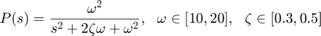
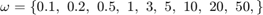
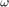
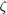
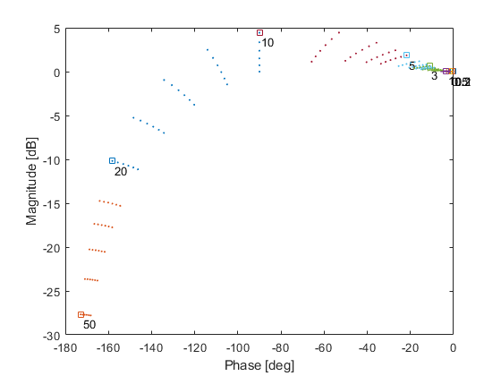
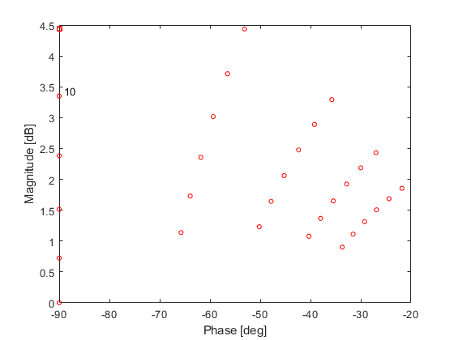
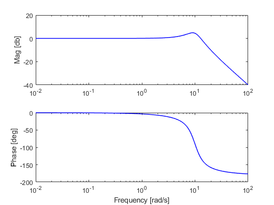
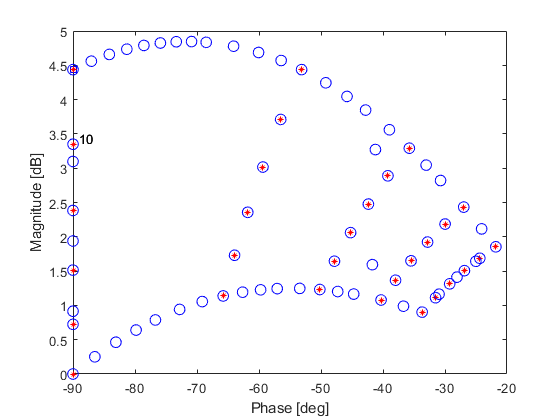

Template Computation
Contents
Overview
The second stage in QFT design is to compute the uncertain templates. In open Qsyn templates are computed from qplant objects using the command ctpl. Open Qsyn offers several options for the template computation:
- Grid
- Random Grid
- Random Samples
- Recursive edge grid
- Recursive grid
- Cases
To compute the templates using specified method at frequencies w type
ctpl(P,method,w)
The nominal plant is computed by cnom. Use as
cnom(P,w_nom)
Example: compute the templates fot the plant

at freqeuncies  rad/s, using a unifor grid of 5 points for  and 6 points for .
omega = qpar('w',10,10,20,5); zeta = qpar('z',0.3,0.3,0.5,6); num = omega*omega; den = [1 2*zeta*omega omega*omega]; P = qplant(num,den)
P =
qplant with properties:
num: [1×1 qexpression]
den: [1×1 qpoly]
pars: [2×1 qpar]
delay: []
unstruct: []
uncint: []
info: 'generated from [num,den] data on: 16-Feb-2019 22:33:51'
templates: []
nominal: []
Since the nominal parameter values were not defined, we arbitrarly select them as the lower values. We now compute thew desired templates and also the nominal case
w_tpl = [0.1 0.2 0.5 1 3 5 10 20 50];
ctpl(P,'grid',w_tpl);
w_nom = logspace(-2,2,200);
cnom(P,w_nom);
Calculating templates using the grid method --> for w=0.1 [rad/s] --> for w=0.2 [rad/s] --> for w=0.5 [rad/s] --> for w=1 [rad/s] --> for w=3 [rad/s] --> for w=5 [rad/s] --> for w=10 [rad/s] --> for w=20 [rad/s] --> for w=50 [rad/s]
Plotting Templates
Note that now the templates and nominal preperties are no longer empty. The computed templates are stores in a dedicated class qtpl. They can be shown by the command show. To acsess the temalptes use P.templates. The nominal point is always computed and stored at the first point in the template. It is marked with a square.
T1 = P.templates; show(T1);
To save time and keystrokes one can instead use the showtpl command directly on the plant object. Both qplt/show and qplant/showtpl accepts more input arguments that specify additional options. For e.g. to plot the template at 10 rad/s with red circle markers:
showtpl(P,10,'color',[1 0 0],'marker','o','mode','nonom')
The nominal is stored in a dedicated class qfr. A qfr object behaves similarly to Control System Toolbox LTI objects. Hence a bode plot for exaple is plotted as follows
figure, bode(P.nominal)
Template Union
Not all template computation methods mentioned above are made equal. It is sometimes useful to merge templates computed by different methods. This is done by union.
Example:
ctpl(P,'recgrid',w_tpl(7)) % this replaces existing template at 10 rad/s T2 = P.templates(7); T = union(T2,T1); h = show(T1(7),'color',[1 0 0],'marker','*'); % return a figure handle h show(T(7),h,'color',[0 0 1],'marker','o','markersize',8) % h is used to plot over P.templates = T; % insert the new template in the plant P
Calculating templates by recurcive grid
Accuracy: 5 [deg], 3 [dB]
--> for w=10 [rad/s]
ADGRID: 2 uncertain and 0 constant parameter(s). Accuracy [5 deg 3dB]
# function evaluations = 2516
Final Border Size = 50
ans =
qplant with properties:
num: [1×1 qexpression]
den: [1×1 qpoly]
pars: [2×1 qpar]
delay: []
unstruct: []
uncint: []
info: 'generated from [num,den] data on: 16-Feb-2019 22:33:51'
templates: [9×1 qtpl]
nominal: [1×1 qfr]
 Alternatively, the new qtpls can be united with the old ones on the go by setting union option in ctpl to 1.
Example:
ctpl(P,'recgrid',w_tpl(8),'union',1);
Calculating templates by recurcive grid Accuracy: 5 [deg], 3 [dB] --> for w=20 [rad/s] ADGRID: 2 uncertain and 0 constant parameter(s). Accuracy [5 deg 3dB] # function evaluations = 2658 Final Border Size = 45
This is the time to move forward to Step 3: Horowitz-Sidi bounds computation